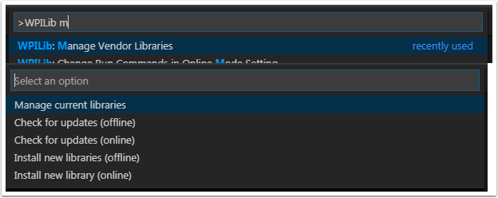
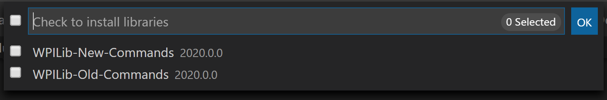

3rd Party Libraries
Teams that are using non-PWM motor controllers or advanced sensors will most likely need to install external vendor dependencies.
What Are Vendor Dependencies?
A vendor dependency is a way for vendors such as CTRE, REV, and others to add their software library to robot projects. This library can interface with motor controllers and other devices. This way, teams can interact with their devices via CAN and have access to more complex and in-depth features than traditional PWM control.
Managing Vendor Dependencies
Vendor dependencies are installed on a per-project basis (so each robot project can have its own set of vendor dependencies). Vendor dependencies can be installed “online” or “offline”. The “online” functionality is done by downloading the dependencies over the internet, while offline is typically provided by a vendor-specific installer.
Warning
If installing a vendor dependency via the “online” mode, make sure to reconnect the computer to the internet and rebuild about every 30 days otherwise the cache will clear, completely deleting the downloaded library install.
Note
Vendors recommend using their offline installers when available, because the offline installer is typically bundled with additional programs that are extremely useful when working with their devices.
How Does It Work?
How Does It Work? - Java/C++
For Java and C++, a JSON file describing the vendor library is installed on your system to ~/wpilib/YYYY/vendordeps (where YYYY is the year and ~ is C:\Users\Public on Windows). This can either be done by an offline installer or the file can be fetched from an online location using the menu item in Visual Studio Code. This file is then used from VS Code to add to the library to each individual project. Vendor library information is managed on a per-project basis to make sure that a project is always pointing to a consistent version of a given vendor library. The libraries themselves are placed in the Maven cache at C:\Users\Public\wpilib\YYYY\maven. Vendors can place a local copy here with an offline installer (recommended) or require users to be connected to the internet for an initial build to fetch the library from a remote Maven location.
This JSON file allows specification of complex libraries with multiple components (Java, C++, JNI, etc.) and also helps handle some complexities related to simulation. Vendors that choose to provide a remote URL in the JSON also enable users to check for updates from within VS Code.
How Does It Work? - LabVIEW
For LabVIEW teams, there might be a few new Third Party items on various palettes (specifically, one in Actuators, one in Actuators -> Motor Control labeled CAN Motor, and one in Sensors). These correspond to folders in C:\Program Files\National Instruments\LabVIEW 2020\vi.lib\Rock Robotics\WPI\Third Party
In order to install third party libraries for LabVIEW, download the VIs from the vendor (typically via some sort of installer). Then drag and drop the third party VIs into the respective folder mentioned above just like any other VI.
Installing Libraries
VS Code
To add a vendor library that has been installed by an offline installer, press Ctrl+Shift+P and type WPILib or click on the WPILib icon in the top right to open the WPILib Command Palette and begin typing Manage Vendor Libraries, then select it from the menu. Select the option to Install new libraries (offline).
Select the desired libraries to add to the project by checking the box next to each, then click OK. The JSON file will be copied to the vendordeps folder in the project, adding the library as a dependency to the project.
In order to install a vendor library in online mode, press Ctrl+Shift+P and type WPILib or click on the WPILib icon in the top right to open the WPILib Command Palette and begin typing Manage Vendor Libraries and select it in the menu, and then click on Install new libraries (online) instead and copy + paste the vendor JSON URL.
Checking for Updates (Offline)
Since dependencies are version managed on a per-project basis, even when installed offline, you will need to Manage Vendor Libraries and select Check for updates (offline) for each project you wish to update.
Checking for Updates (Online)
Part of the JSON file that vendors may optionally populate is an online update location. If a library has an appropriate location specified, running Check for updates (online) will check if a newer version of the library is available from the remote location.
Removing a Library Dependency
To remove a library dependency from a project, select Manage Current Libraries from the Manage Vendor Libraries menu, check the box for any libraries to uninstall and click OK. These libraries will be removed as dependencies from the project.
Command-Line
Adding a vendor library dependency from the vendor URL can also be done through the command-line via a gradle task. Open a command-line instance at the project root, and enter gradlew vendordep --url=<url> where <url> is the vendor JSON URL. This will add the vendor library dependency JSON file to the vendordeps folder of the project. Vendor libraries can be updated the same way.
The vendordep gradle task can also fetch vendordep JSONs from the user wpilib folder. To do so, pass FRCLOCAL/Filename.json as the file URL. For example, gradlew vendordep --url=FRCLOCAL/WPILibNewCommands.json will fetch the JSON for the command-based framework.
Libraries
Important
Vendors are in the process of releasing updates compatible with the 2023 version of WPILib. 2022 versions are not compatible.
Click these links to visit the vendor site to see whether they offer online installers, offline installers, or both. URLs below are to plug in to the VS Code -> Install New Libraries (online) feature.
- Copperforge LibCu Software Library - Library for all Copperforge devices including the Lasershark
Not yet available for 2023
- 2023 CTRE Phoenix Framework - Contains CANcoder, CANifier, CANdle, Pigeon IMU, Pigeon 2.0, Talon FX, Talon SRX, and Victor SPX Libraries and Phoenix Tuner program for configuring CTRE CAN devices
Phoenix (v5):
https://maven.ctr-electronics.com/release/com/ctre/phoenix/Phoenix5-frc2023-latest.jsonPhoenix (Pro):
https://maven.ctr-electronics.com/release/com/ctre/phoenixpro/PhoenixPro-frc2023-latest.jsonPhoenix (Pro and v5):
https://maven.ctr-electronics.com/release/com/ctre/phoenixpro/PhoenixProAnd5-frc2023-latest.jsonNote
To get the 2023 version of the same Phoenix library as previous years, use the first link above (Phoenix v5). Use one of the other json links if you’re using Phoenix Pro.
Warning
Only use ONE of the above Phoenix vendordep links within a project. If you need both Phoenix v5 and Phoenix Pro in the same project, use the third option.
- Digilent - DMC-60C library
Not yet available for 2023
- Playing With Fusion Driver - Library for all PWF devices including the Venom motor/controller
https://www.playingwithfusion.com/frc/playingwithfusion2023.json- Kauai Labs - Libraries for NavX-MXP, NavX-Micro, and Sensor Fusion
https://dev.studica.com/releases/2023/NavX.json- REV Robotics REVLib - Library for all REV devices including SPARK MAX and Color Sensor V3
https://software-metadata.revrobotics.com/REVLib-2023.json
Community Libraries
- PhotonVision - Library for PhotonVision CV software
https://maven.photonvision.org/repository/internal/org/photonvision/PhotonLib-json/1.0/PhotonLib-json-1.0.json
WPILib Command Libraries
The WPILib new command library has been split into a vendor library. It is installed by the WPILib installer for offline installation. It may also be installed with the following online link:
To remove a library dependency from a project, select Manage Current Libraries from the Manage Vendor Libraries menu, check the box for any libraries to uninstall and click OK. These libraries will be removed as dependencies from the project.
Romi Library
A Romi Library has been created to contain several helper classes that are a part of the RomiReference example.